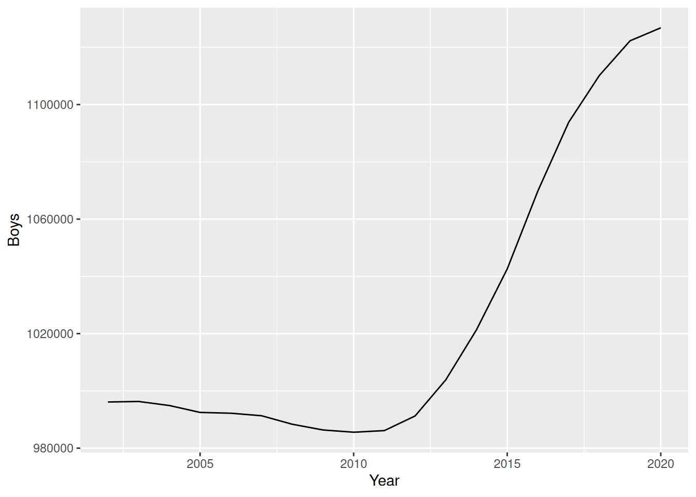
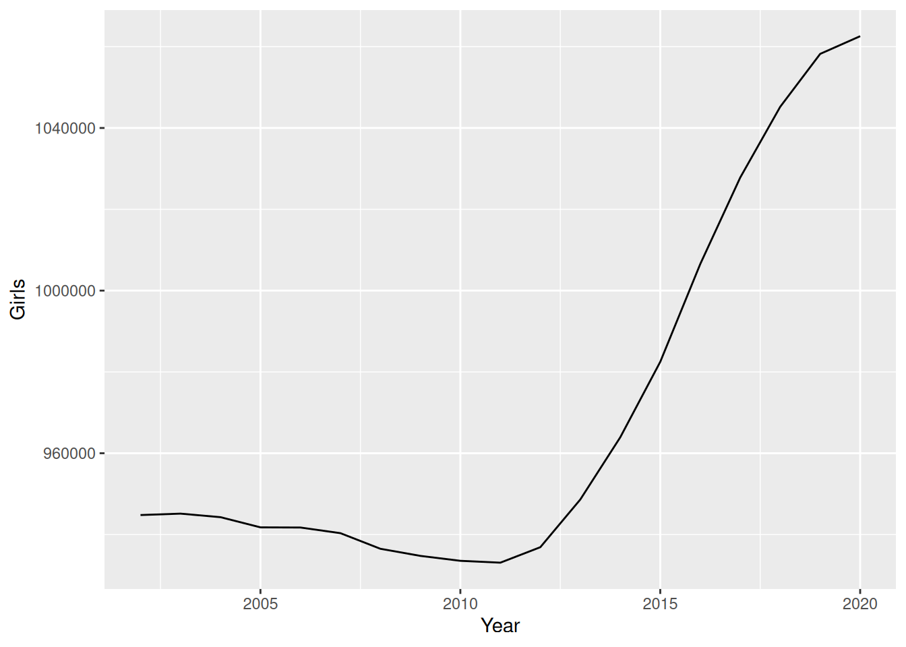

| Store | Day | Status |
|---|---|---|
| Media Markt | Weekday | Open |
| Media Markt | Weekend | Closed |
| Elgiganten | Weekday | Open |
| Elgiganten | Weekend | Open |
| Expert | Weekday | Closed |
| Expert | Weekend | Closed |
Long and wide data
Consider these two tables (made up data):
| Store | Weekday | Weekend |
|---|---|---|
| Media Markt | Open | Closed |
| Elgiganten | Open | Open |
| Expert | Closed | Closed |
They contain the same kind of information (except perhaps specifying the open status as specifically “Status”). Each of these forms have different advantages, thus it would be useful to be able to convert between these two formats in SQL.
Pivot longer
Consider the table birthstatistics which first lines looks like this:
SELECT * FROM birthstatistics
LIMIT 5| region | sex | foreign/Swedish background | 2002 | 2003 | 2004 | 2005 | 2006 | 2007 | 2008 | 2009 | 2010 | 2011 | 2012 | 2013 | 2014 | 2015 | 2016 | 2017 | 2018 | 2019 | 2020 |
|---|---|---|---|---|---|---|---|---|---|---|---|---|---|---|---|---|---|---|---|---|---|
| 01 Stockholm county | boys | foreign born | 13346 | 13157 | 12759 | 12675 | 13271 | 14325 | 15126 | 16074 | 16901 | 18075 | 19050 | 20059 | 20827 | 21843 | 23084 | 25124 | 26270 | 27060 | 26484 |
| 01 Stockholm county | boys | born in Sweden with two foreign born parents | 31596 | 32185 | 32785 | 33456 | 34282 | 35224 | 36180 | 37107 | 38221 | 39262 | 40386 | 41639 | 43249 | 45001 | 46696 | 48375 | 50232 | 52305 | 53741 |
| 01 Stockholm county | boys | born in Sweden with one parent born in Sweden and one foreign born parent | 29815 | 30395 | 30976 | 31565 | 32102 | 32667 | 33368 | 34193 | 35105 | 35894 | 36845 | 37945 | 39228 | 40391 | 41558 | 42512 | 43310 | 44123 | 44619 |
| 01 Stockholm county | boys | born in Sweden with two parents born in Sweden | 131708 | 133236 | 134604 | 135502 | 136532 | 137152 | 137235 | 137895 | 138408 | 138634 | 138838 | 140035 | 141358 | 142826 | 143973 | 144656 | 144897 | 144727 | 144212 |
| 01 Stockholm county | girls | foreign born | 12946 | 12732 | 12570 | 12570 | 13376 | 14356 | 15184 | 16107 | 16738 | 17719 | 18685 | 19278 | 19976 | 20694 | 21615 | 23256 | 24556 | 25475 | 24805 |
Let’s say we want to do a bunch of operations where we specify mathematical constraints on the year number. Let’s say one of them is to get the data where the year is an even number. If there was a column called Year we could specify “WHERE Year % 2 = 0”. But we can’t do that as each year is a column and not a cell value in a column. Thus we would like instead a form where there was a column called “Year”. Then we can have the values in each cell be inside a single column that we will call “Persons”. This is one way to achieve that in SQL (not the prettiest way, but one of the most straightforward):
CREATE View long_table AS
SELECT region, sex, 'foreign/Swedish', 2002 as Year, [2002] as Persons FROM birthstatistics
UNION ALL
SELECT region, sex, 'foreign/Swedish', 2003 as Year, [2003] as Persons FROM birthstatistics
UNION ALL
SELECT region, sex, 'foreign/Swedish', 2004 as Year, [2004] as Persons FROM birthstatistics
UNION ALL
SELECT region, sex, 'foreign/Swedish', 2005 as Year, [2005] as Persons FROM birthstatistics
UNION ALL
SELECT region, sex, 'foreign/Swedish', 2006 as Year, [2006] as Persons FROM birthstatistics
UNION ALL
SELECT region, sex, 'foreign/Swedish', 2007 as Year, [2007] as Persons FROM birthstatistics
UNION ALL
SELECT region, sex, 'foreign/Swedish', 2008 as Year, [2008] as Persons FROM birthstatistics
UNION ALL
SELECT region, sex, 'foreign/Swedish', 2009 as Year, [2009] as Persons FROM birthstatistics
UNION ALL
SELECT region, sex, 'foreign/Swedish', 2010 as Year, [2010] as Persons FROM birthstatistics
UNION ALL
SELECT region, sex, 'foreign/Swedish', 2011 as Year, [2011] as Persons FROM birthstatistics
UNION ALL
SELECT region, sex, 'foreign/Swedish', 2012 as Year, [2012] as Persons FROM birthstatistics
UNION ALL
SELECT region, sex, 'foreign/Swedish', 2013 as Year, [2013] as Persons FROM birthstatistics
UNION ALL
SELECT region, sex, 'foreign/Swedish', 2014 as Year, [2014] as Persons FROM birthstatistics
UNION ALL
SELECT region, sex, 'foreign/Swedish', 2015 as Year, [2015] as Persons FROM birthstatistics
UNION ALL
SELECT region, sex, 'foreign/Swedish', 2016 as Year, [2016] as Persons FROM birthstatistics
UNION ALL
SELECT region, sex, 'foreign/Swedish', 2017 as Year, [2017] as Persons FROM birthstatistics
UNION ALL
SELECT region, sex, 'foreign/Swedish', 2018 as Year, [2018] as Persons FROM birthstatistics
UNION ALL
SELECT region, sex, 'foreign/Swedish', 2019 as Year, [2019] as Persons FROM birthstatistics
UNION ALL
SELECT region, sex, 'foreign/Swedish', 2020 as Year, [2020] as Persons FROM birthstatistics;Now we can do a statement like the following:
SELECT * FROM long_table
WHERE Year % 2 = 0 AND sex = "girls" AND Persons > 100000
LIMIT 5;| region | sex | ‘foreign/Swedish’ | Year | Persons |
|---|---|---|---|---|
| 01 Stockholm county | girls | foreign/Swedish | 2002 | 125531 |
| 14 Västra Götaland county | girls | foreign/Swedish | 2002 | 120074 |
| 01 Stockholm county | girls | foreign/Swedish | 2004 | 127747 |
| 14 Västra Götaland county | girls | foreign/Swedish | 2004 | 118544 |
| 01 Stockholm county | girls | foreign/Swedish | 2006 | 129493 |
Pivot wider
Now let’s say we want boys and girls to be columns. We can achieve that with the following:
CREATE VIEW My_view AS
SELECT region, 'foreign/Swedish', Year,
SUM(CASE WHEN sex = 'boys' THEN Persons ELSE 0 END) AS Boys,
SUM(CASE WHEN sex = 'girls' THEN Persons ELSE 0 END) AS Girls
FROM long_table
GROUP BY region, 'foreign/Swedish', YearWhy are we using SUM? Well in this example we kind of assume that given a distinct combination of the columns ‘region’, ‘foreign/Swedish’ and ‘Year’, then there only exists on row where ‘sex’ is specified as for example boy, and the value in ‘Persons’ is the value we’ll put under the column ‘boy’ in the widened table with that combination. But what if there are multiple? One way for example to deal with it is to just pick the first row and ignore the others. But one way that usually generalizes well is to sum all of them (perhaps each row symbolizes a sub-region for example).
Here’s an example of a query using the the view with widened data:
SELECT * FROM My_View
WHERE Year % 2 = 0
LIMIT 5| region | ‘foreign/Swedish’ | Year | Boys | Girls |
|---|---|---|---|---|
| 01 Stockholm county | foreign/Swedish | 2002 | 206465 | 196752 |
| 01 Stockholm county | foreign/Swedish | 2004 | 211124 | 200638 |
| 01 Stockholm county | foreign/Swedish | 2006 | 216187 | 205821 |
| 01 Stockholm county | foreign/Swedish | 2008 | 221909 | 210582 |
| 01 Stockholm county | foreign/Swedish | 2010 | 228635 | 216624 |
As an example let’s create two graphs for the total boys through the years and the total girls through the years.
CREATE VIEW My_total AS
SELECT Year, SUM(Boys) AS Boys, SUM(Girls) AS Girls
FROM My_view
GROUP BY Yearlibrary(ggplot2)
my_view_df <- dbGetQuery(con, "SELECT * FROM My_total")
ggplot(my_view_df, aes(Year, Boys)) + geom_line()
ggplot(my_view_df, aes(Year, Girls)) + geom_line()